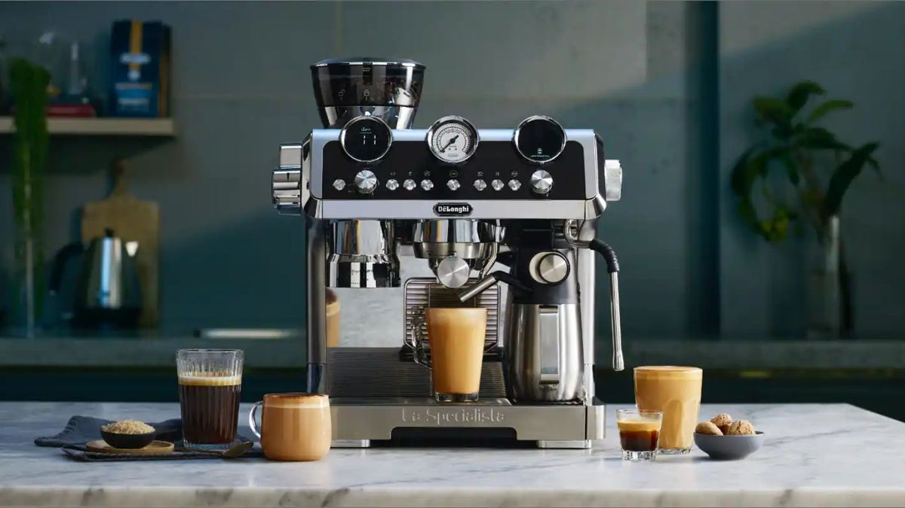
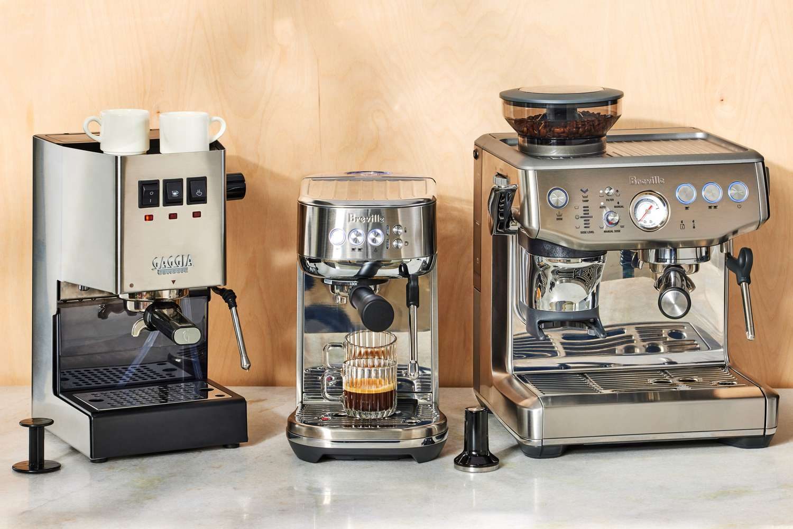
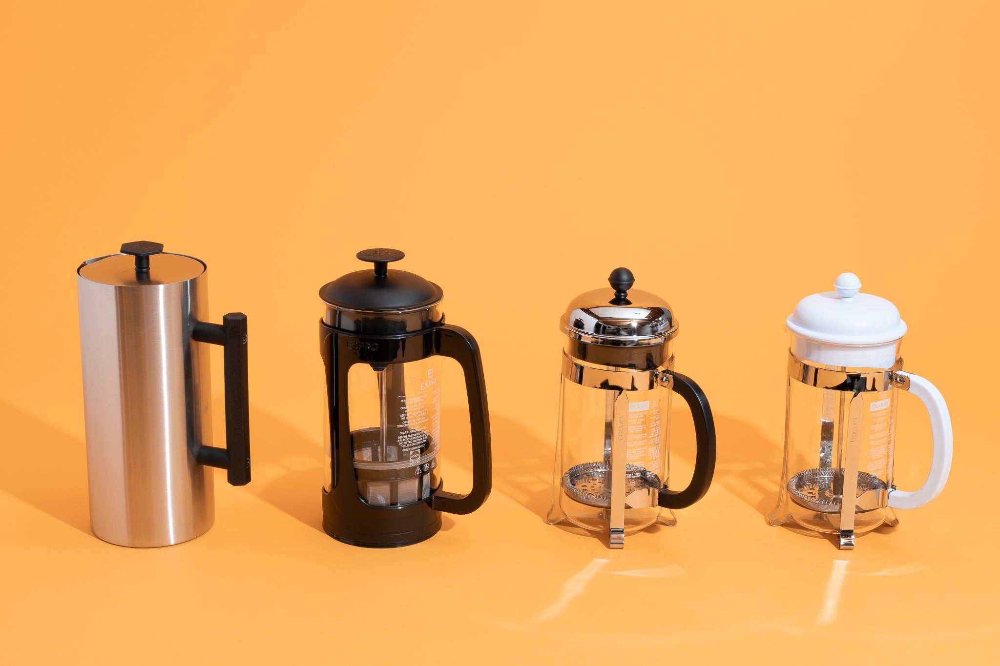
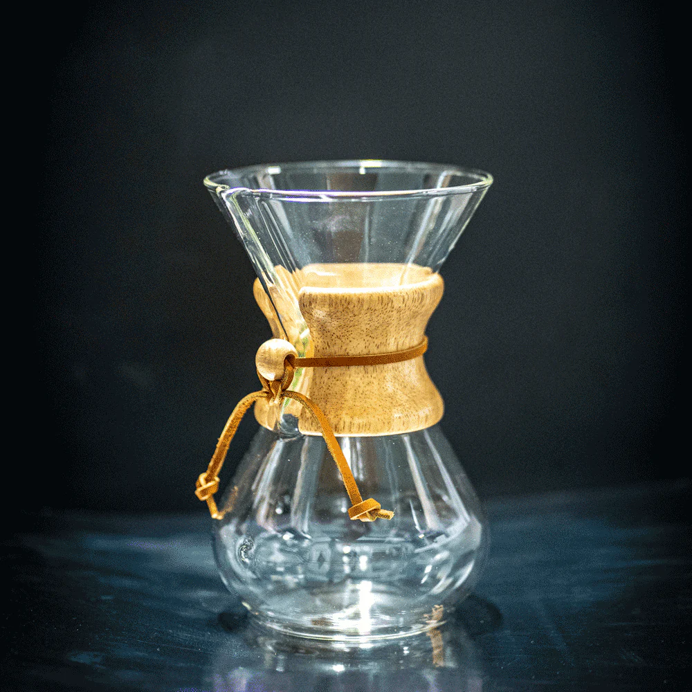
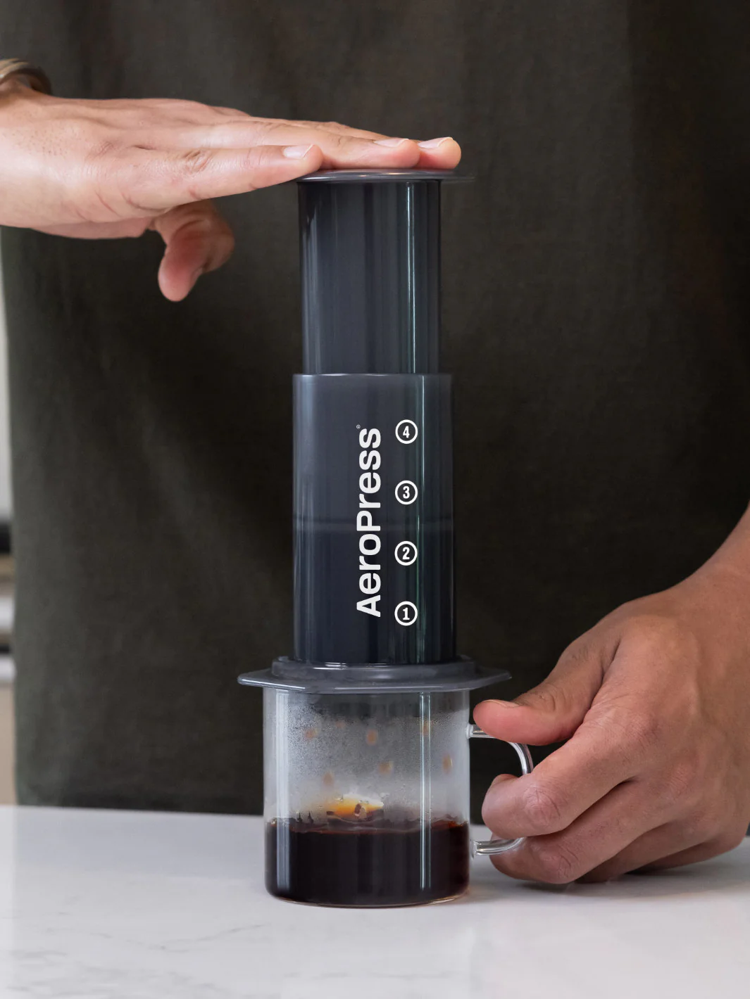
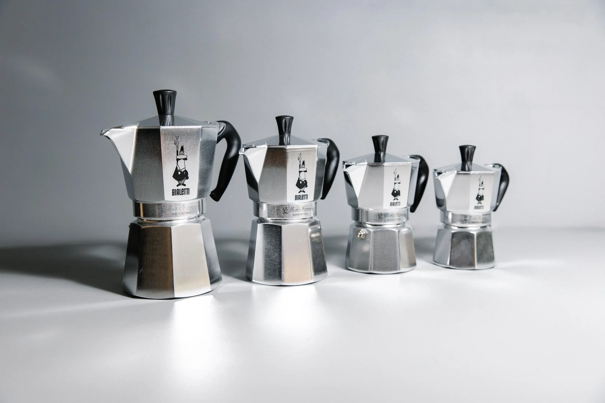
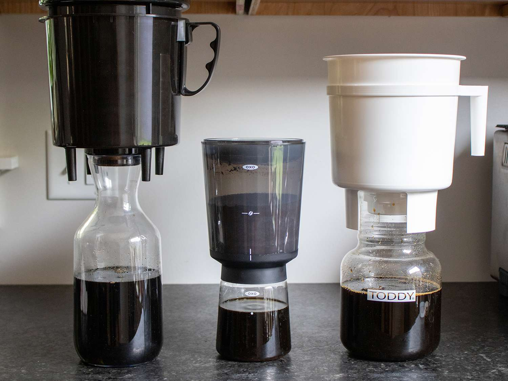
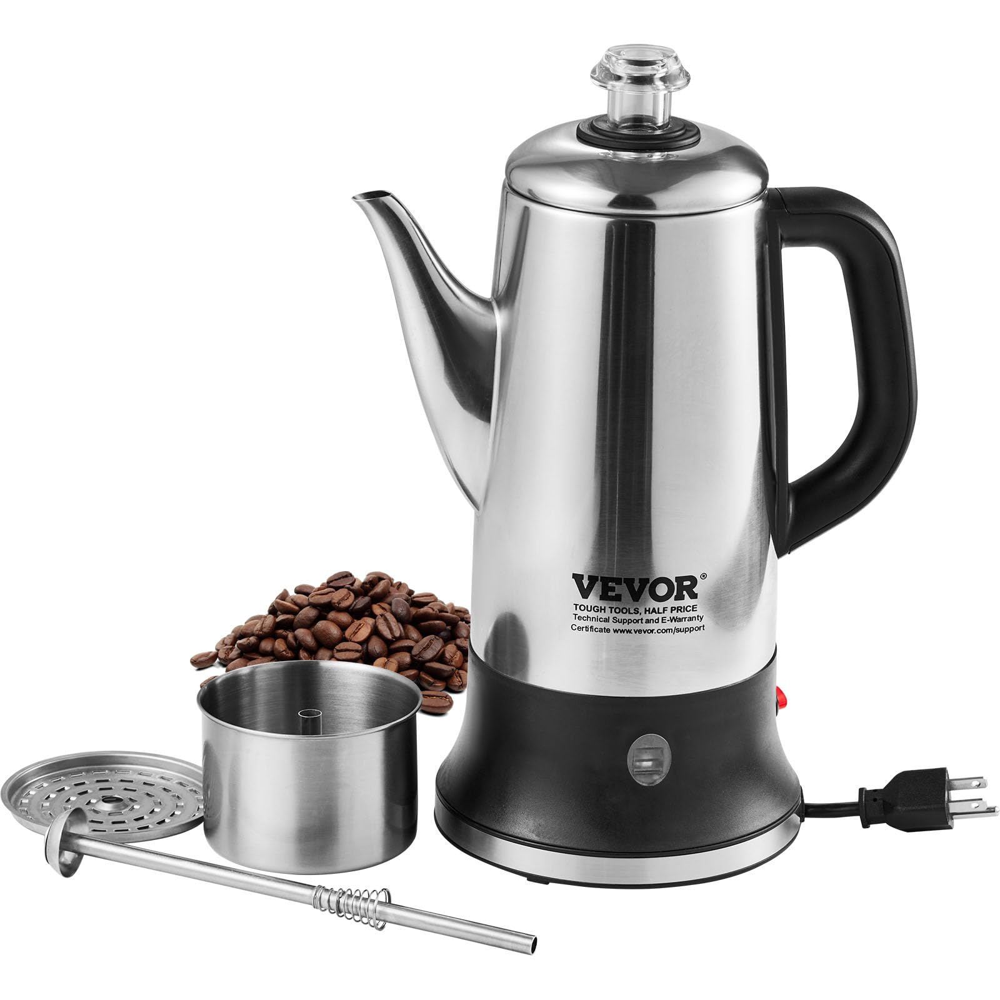
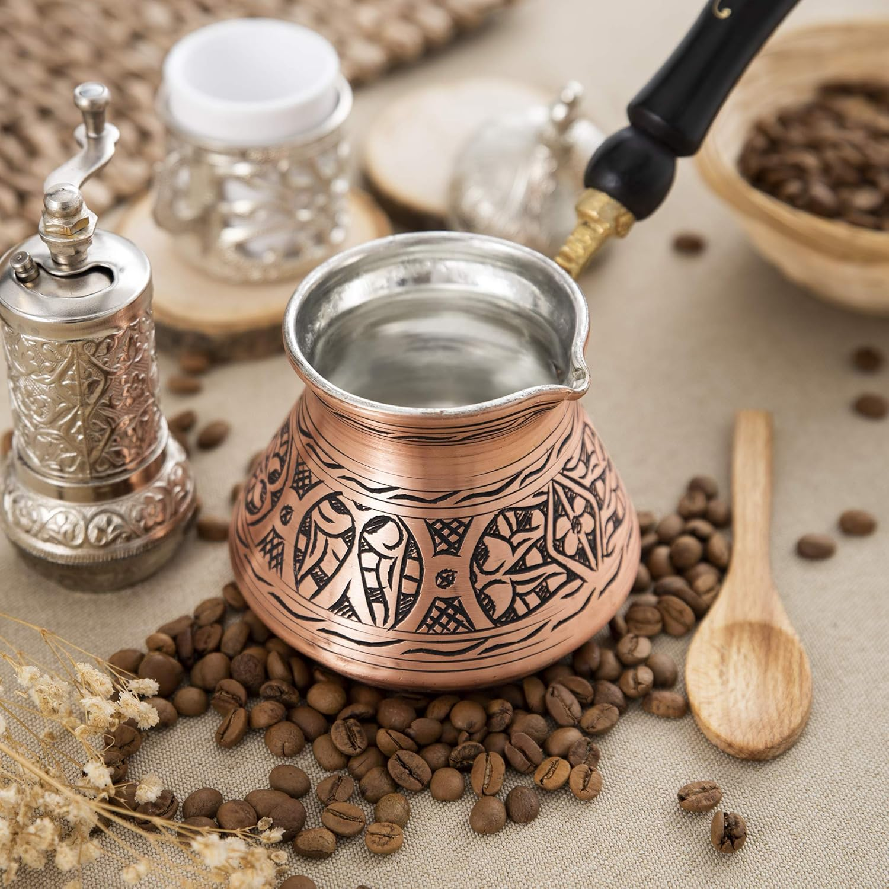

Beans Boutique

Beans Boutique
Discover the perfect tools to elevate your coffee experience. From espresso machines to French presses, find the equipment that suits your brewing style.


A high-quality espresso machine designed for coffee enthusiasts. Create café-style espresso, lattes, and cappuccinos with ease.
Usage Tips : Preheat the machine, use finely ground coffee, and tamp evenly for the best espresso shots.
100$

A classic French press with a stainless steel frame and glass body. Ideal for making rich, full-bodied coffee.
Usage Tips : Use coarse-ground coffee and steep for 4 minutes before pressing the plunger slowly
230$

A stylish pour-over coffee maker with an elegant glass design, producing smooth and clean-tasting coffee.
Usage Tips :Use Chemex-specific or thick paper filters and pour hot water in slow, circular motions for an even extraction.
300$

Description :A compact and versatile coffee maker that uses air pressure to brew rich, smooth coffee in minutes.
Usage Tips :Use fine to medium-ground coffee, stir for 10 seconds, then press gently for a balanced flavor.
100$

Description :A traditional stovetop espresso maker that brews bold, strong coffee with a rich aroma
Usage Tips : Fill the bottom chamber with water, add finely ground coffee to the filter, and heat on low until coffee brews.
280$

Description :A simple brewing system for smooth, less acidic coffee, steeped in cold water for an extended time.
Usage Tips : Use coarse-ground coffee, steep in cold water for 12–24 hours, then strain and serve over ice.
321$

Description :A unique vacuum-based coffee maker that uses heat and pressure to brew flavorful, aromatic coffee.
Usage Tips : Use medium-ground coffee, heat water in the lower chamber, and allow the vacuum effect to extract the coffee.
140$

Description :A classic coffee brewer that continuously cycles hot water through coffee grounds for a robust flavor.
Usage Tips:Use medium-coarse coffee grounds and brew on low heat to avoid over-extraction and bitterness.
230$

Description :A small copper or brass pot (cezve) used to brew strong, unfiltered coffee with a rich foam.
Usage Tips :Use extra-fine ground coffee, simmer with water and sugar (optional), and pour gently to preserve the foam.
200$